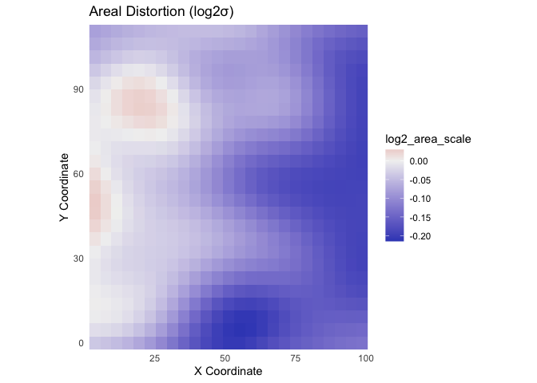

The mapAI package provides a cohesive, end-to-end toolkit in R for the Positional Accuracy Improvement (PAI) of historical vector maps. It uses modern machine learning and statistical models to learn the complex geometric distortions inherent in historical cartographic documents and applies a correction to improve their alignment with modern coordinate systems.
The package is designed for researchers and practitioners in geomatics and GIS who need to integrate historical maps into contemporary spatial analysis workflows.
Overview
The core workflow of mapAI involves:
-
Reading Data: Easily load your distorted map (
.shp, etc.) and a corresponding set of homologous points (GCPs) from a CSV file. -
Training a Model: Use
train_pai_model()to train one of several correction models (lm,rf,gam,helmert) to learn the distortion pattern from your GCPs. -
Applying the Correction: Use
apply_pai_model()to apply the trained model to every vertex of your historical map, generating a new, correctedsfobject. -
Analyzing Distortion: Go beyond simple correction by using functions like
analyze_distortion()andplot_indicatrices()to perform a detailed differential distortion analysis based on Tissot’s indicatrix theory.
Installation
You can install the development version of mapAI from GitHub with:
# install.packages("pak")
pak::pak("kvantas/mapAI")Example
This example demonstrates the main workflow from start to finish. We will first generate a synthetic dataset representing a distorted map, and then use the package’s functions to correct it.
1. Load Libraries and Create Demo Data
We begin by loading the necessary libraries and using create_demo_data() to generate a test case. This function creates a distorted grid shapefile and a corresponding CSV file of control points in a temporary directory.
library(mapAI)
library(sf)
#> Linking to GEOS 3.13.0, GDAL 3.8.5, PROJ 9.5.1; sf_use_s2() is TRUE
library(ggplot2)
# Generate a shapefile and a GCPs CSV with complex distortions
# The function returns a list containing the paths to these new files.
demo_files <- create_demo_data(type = "complex", seed = 42)
#> -> Homologous points saved to: /var/folders/yh/kq6cp_457lg059f3l02r57s80000gn/T//RtmpVVV9Ta/demo_gcps.csv
#> -> Distorted map saved to: /var/folders/yh/kq6cp_457lg059f3l02r57s80000gn/T//RtmpVVV9Ta/demo_map.shp2. Read the Data into R
Next, we use the package’s reading functions to load the files we just created. When using your own data, you would simply replace the file paths here with the paths to your own .shp and .csv files.
3. Train a Correction Model
We’ll train a Generalized Additive Model (gam), which is an excellent choice as it is flexible enough to capture the complex, non-linear distortions in our demo data.
# Train the model using our GCPs
gam_model <- train_pai_model(gcp_data, method = "gam")
#> Training 'gam' model...4. Apply the Model to Correct the Map
Now we apply this trained model to our distorted grid. The function returns a new sf object with the corrected geometries.
# Apply the model to the distorted map
corrected_map <- apply_pai_model(gam_model, map_to_correct)
#> Applying PAI model to map features...
#> Correction complete.5. Visualize the Result
The most effective way to see the result is to plot the corrected map overlaid on the original. The “warped” grid being transformed back into a regular grid provides a clear visual confirmation of the positional improvement.
# For easy plotting, we add a 'status' column to each map
map_to_correct$status <- "Original (Distorted)"
corrected_map$status <- "Corrected"
# Combine them into a single sf object for ggplot2
comparison_data <- rbind(
map_to_correct[, "status"],
corrected_map[, "status"]
)
# Create a plot comparing the original and corrected grids
ggplot(comparison_data) +
geom_sf(aes(color = status, linetype = status), fill = NA, linewidth = 0.7) +
scale_color_manual(
name = "Map Status",
values = c("Original (Distorted)" = "grey50", "Corrected" = "#e41a1c")
) +
scale_linetype_manual(
name = "Map Status",
values = c("Original (Distorted)" = "dashed", "Corrected" = "solid")
) +
labs(
title = "Positional Correction of a Distorted Grid",
subtitle = "Overlay of original (dashed) and mapAI-corrected (solid) geometries"
) +
theme_minimal()Advanced: Distortion Analysis
mapAI is more than just a correction tool. You can also perform a detailed analysis of the distortion itself. For example, you can analyze the maximum shear (max_shear) across the map and visualize it as a surface.
# 1. Create a grid of points for analysis using the pipe (%>%)
# We need the magrittr package for the pipe if not loading dplyr.
library(magrittr)
analysis_points <- sf::st_make_grid(gcp_data, n = c(25, 25)) %>%
sf::st_centroid() %>%
sf::st_sf()
# 2. Analyze the distortion using our trained GAM model
distortion_results <- analyze_distortion(gam_model, analysis_points)
# 3. Plot the shear distortion surface
plot_distortion_surface(
distortion_results,
metric = "max_shear",
gcp_data = gcp_data
) +
labs(title = "Maximum Shear Distortion (°)") This shows how mapAI can be used for both practical correction and deeper analytical research into the properties of historical maps.